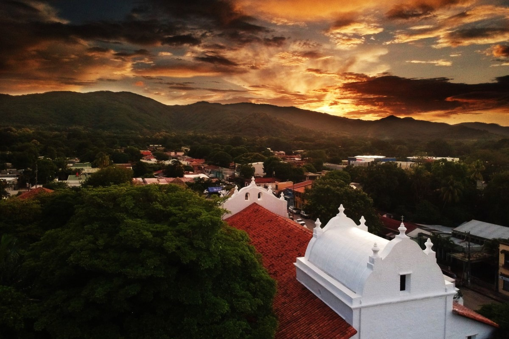
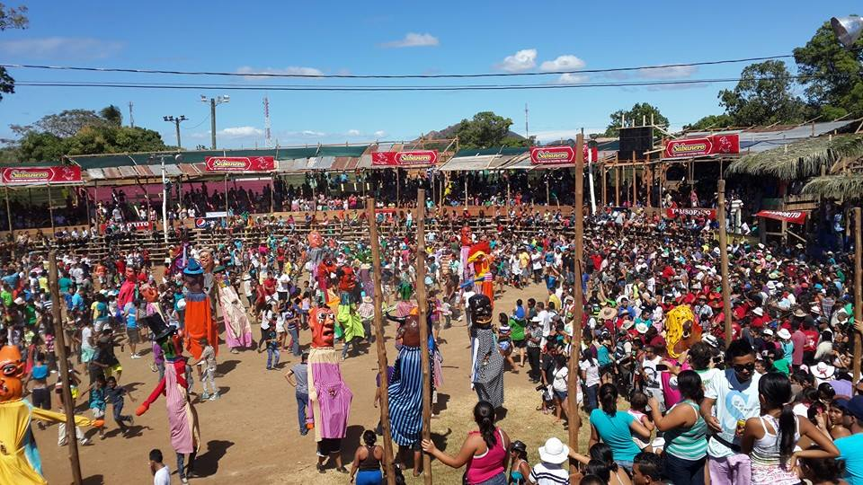
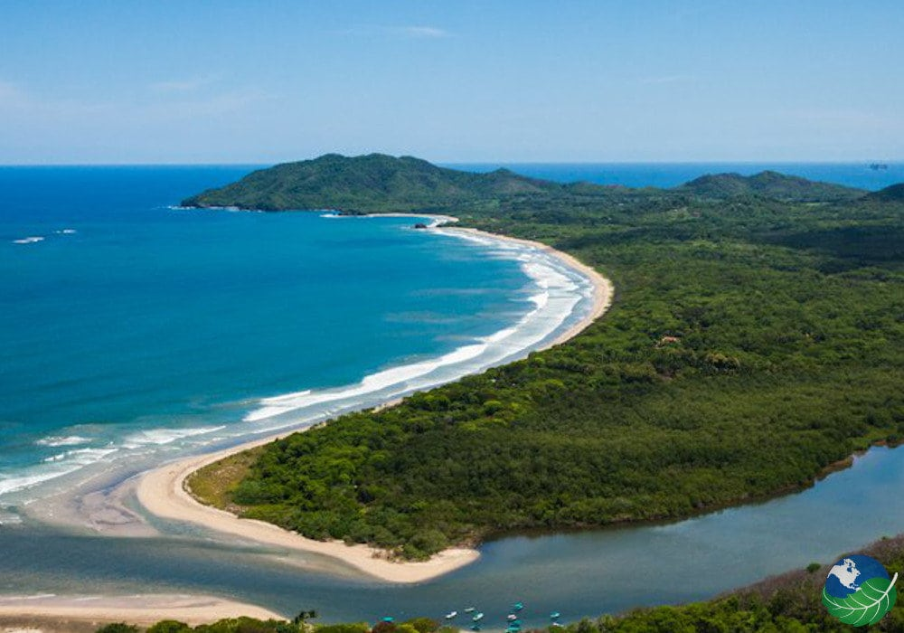
Aunque no fue ahí donde te criaste, sino en el Carmen, un lugar muy bonito (donde casi llegamos a coincidir). Ahí fuiste a la Escuela Betania, y mas tarde irías al colegio en el Liceo Napoleon Quesada
donde el día de la graduación de noveno desfilaste como mejor promedio.
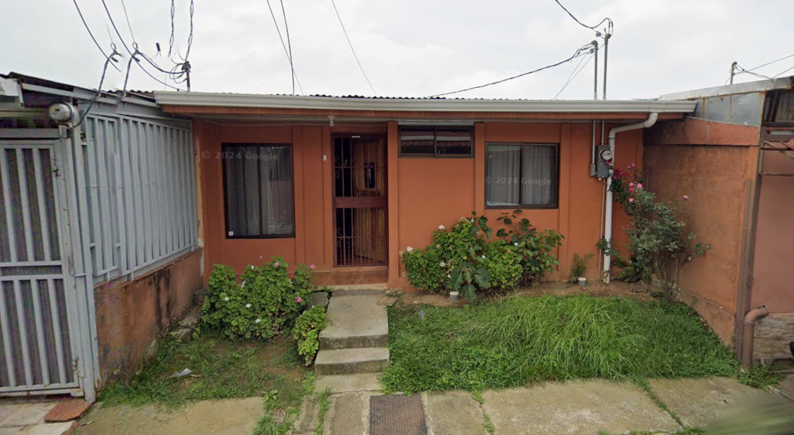
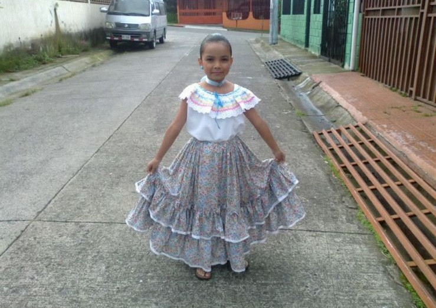
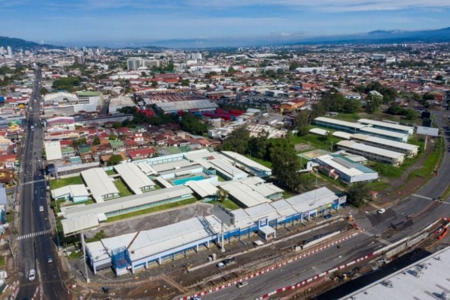
Y entre todas esas cosas finalmente terminaste ingresando al CTP de Calle Blancos a la especialidad de Redes, que nos lleva hasta el día de hoy, donde ya tienes tanto el bachillerato como el técnico, ganados
a punta de esfuerzo. Y esperando a que en unos meses ingreses a economía en la Universidad Nacional.
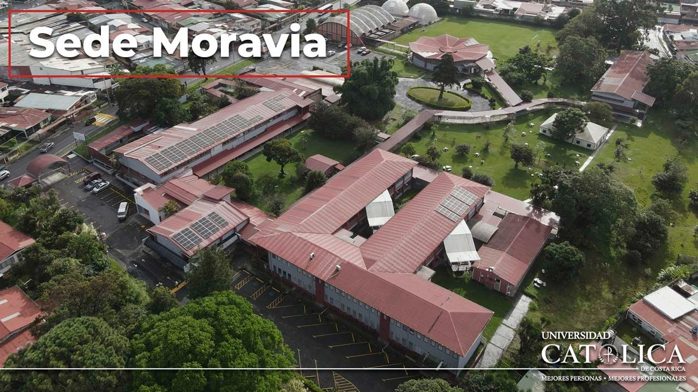
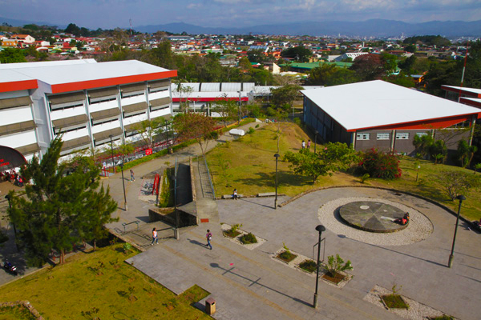
Aunque no podría terminar esta mini biografía sin mencionar antes a tu mamá Doña Marlem, tu abuela Doña Juana, tu hermana mayor Emily, tu hermana menor Sofia, tu sobrina Amanda y a Candito, que son tu familia
y son de las personas que mas me has dicho que quieres.
 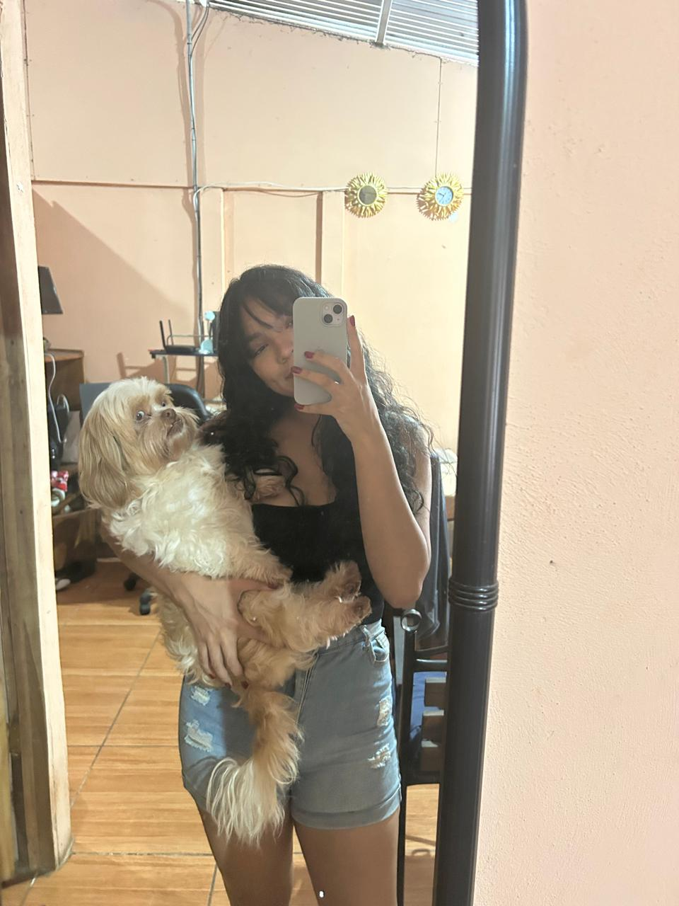
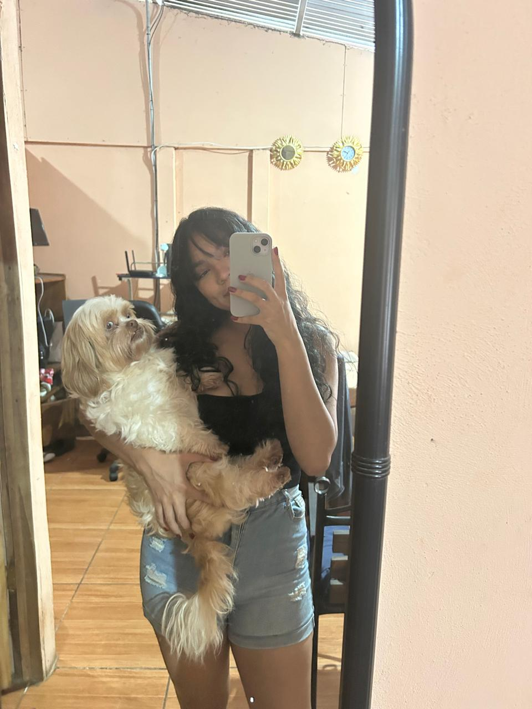
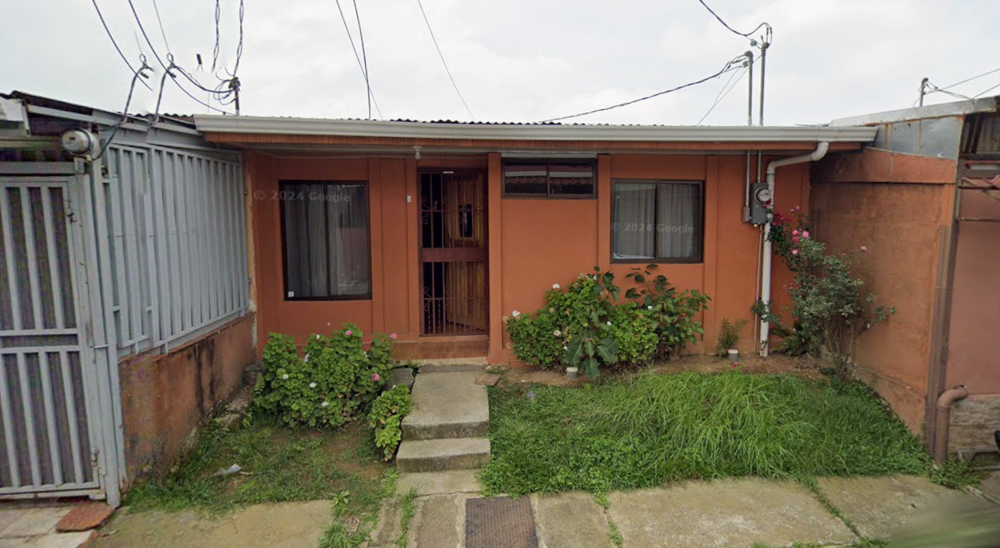
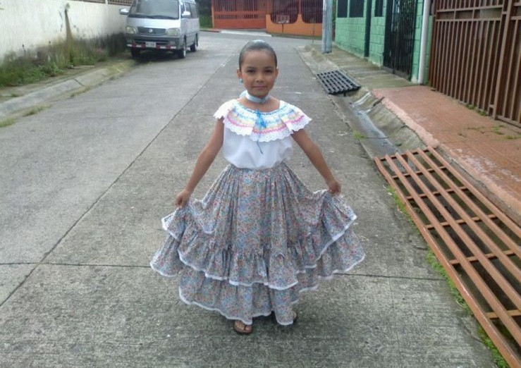
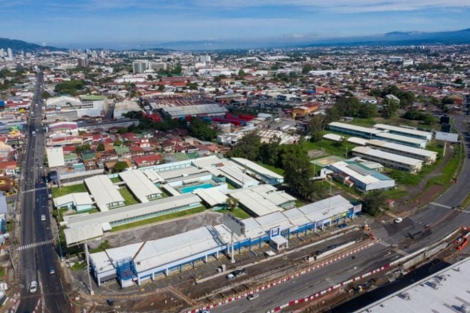
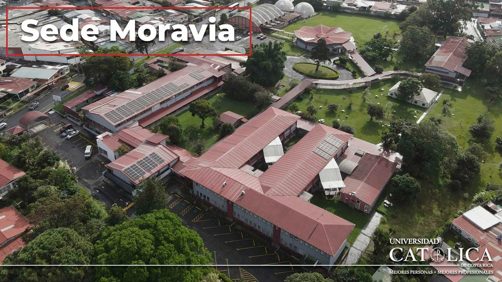
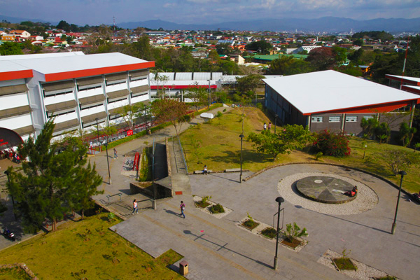
Aunque no podría terminar esta mini biografía sin mencionar antes a tu mamá Doña Marlem, tu abuela Doña Juana, tu hermana mayor Emily, tu hermana menor Sofia, tu sobrina Amanda y a Candito, que son tu familia
y son de las personas que mas me has dicho que quieres.
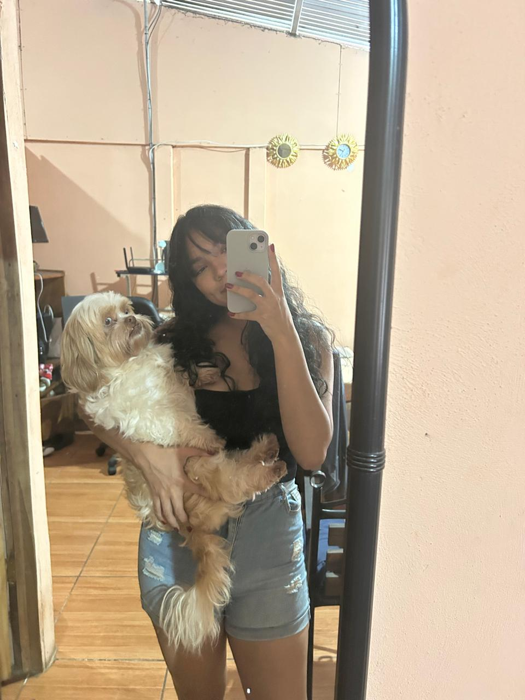
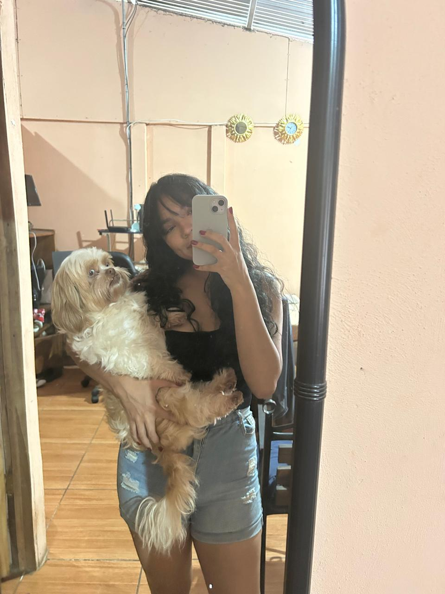